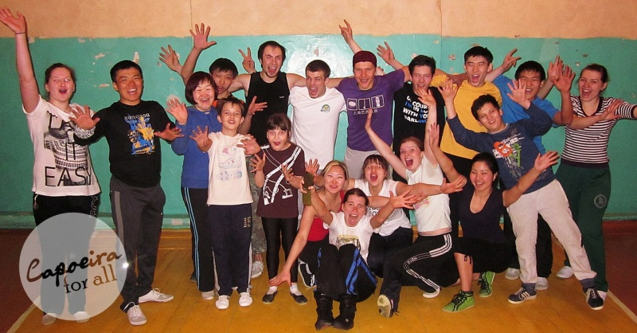

В гостях у уланудэнских капоэйристов, или о полезном деле

Нечасто судьба меня забрасывает на историческую родину, но если такое случается, то я стараюсь пользоваться возможностью, чтобы посетить как можно больше разных капоэйра-групп (а что еще тут делать?). В прошлом году я был в Москве, а совсем недавно я оказался в г. Улан-Удэ (Бурятия) и побывал в единственной школе капоэйры города «Academia de Capoeira Contemporanea» бывш. CDO и Pelo Sinal de Santa Cruz).
Ребята приняли очень тепло и радушно, периодически вспоминая мои скромные труды и статьи о капоэйре на Capoeira.INsiders. Все это мне напомнило дружественные приемы в московских группах и заставило призадуматься о полезном деле, которое мы все здесь делаем. И пусть посещаемость у нас не десятки тысяч в день, пусть ваши посты никто не плюсует и не комментирует, но знайте — мы делаем очень полезное дело для капоэйры в России и наши труды останутся в памяти, пусть небольшой, но очень клевой части человечества Homo Capoeiristas.
P.S: Совсем случайно в городе наткнулся на забавный баннер. Мне понравился :)